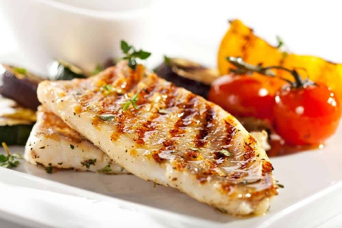

Filete Pescado
Un filete suave y jugoso, sazonado con limón y eneldo — rápido, ligero y delicioso.
Ingredientes:
- 2 Filetes de pescado blanco (Merluza o Tilapia)
- 2 Cucharadas de mantequilla
- 2 Dientes de ajo picados
- 1 Cucharadita de perejil fresco picado
- 1 Limón
- Sal y Pimienta al gusto
Preparación
- Preparar el pescado
- Lavar y secar los filetes con papel absorbente.
- Sazonar con sal y pimienta al gusto.
- Derretir la mantequilla
- En una sartén grande, derretir la mantequilla a fuego medio.
- Agregar el ajo picado y sofreír 1 minuto hasta que suelte aroma.
- Cocinar el pescado
- Colocar los filetes en el sarten
- Cocinar 3–4 minutos por cada lado, hasta que estén dorados y cocidos.
- Añadir el limon
- Exprimir el jugo de limón sobre el pescado mientras aún está caliente.
- Espolvorear perejil fresco por encima
- Servir caliente
- Acompañar con arroz blanco, ensalada o papas al vapor.